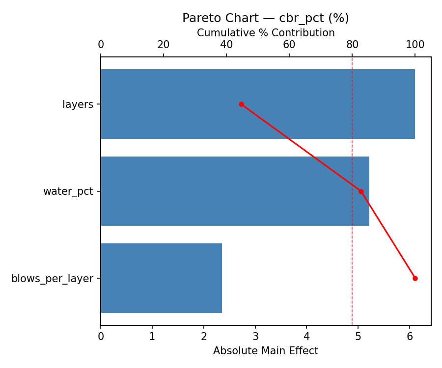
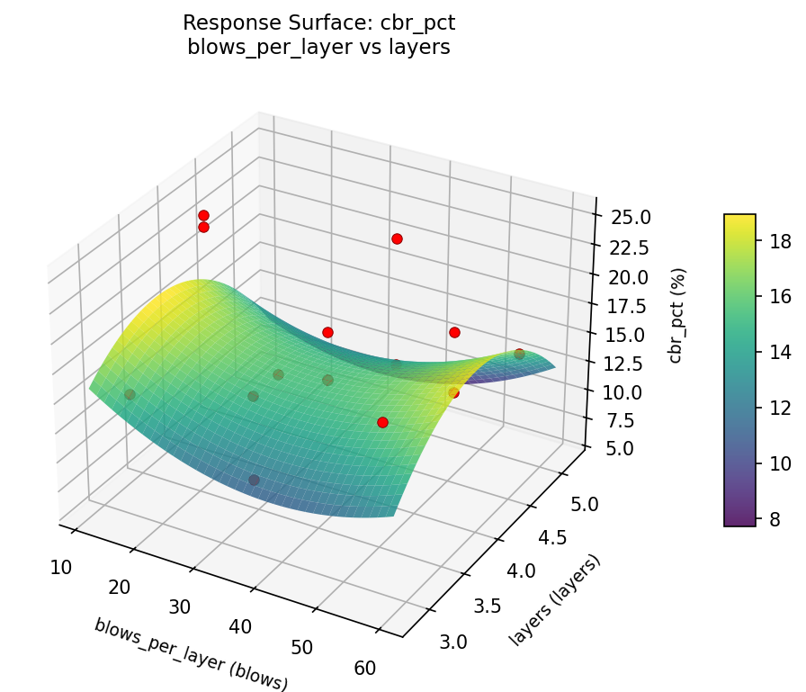
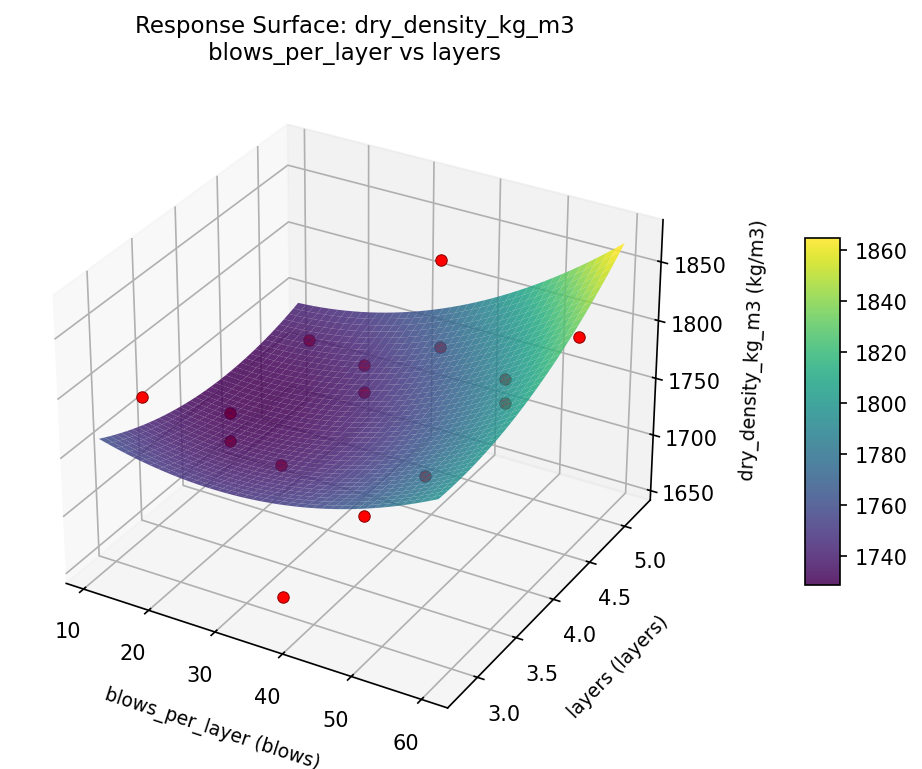
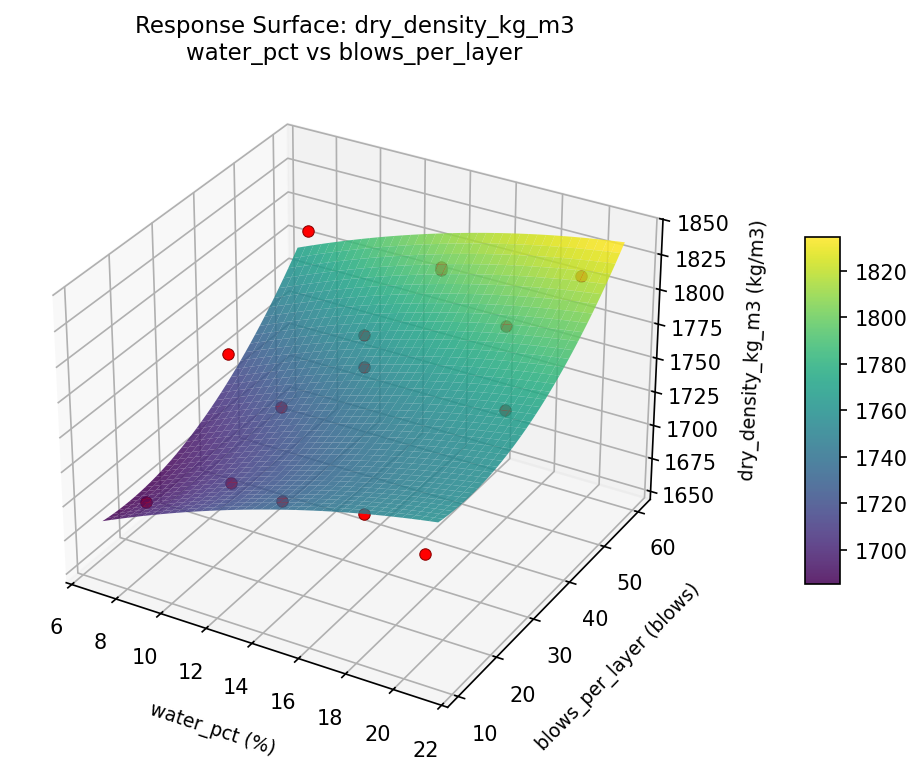

Summary
This experiment investigates soil compaction testing. Box-Behnken design to maximize dry density and identify optimal moisture content by tuning water content, compaction energy, and layer count.
The design varies 3 factors: water pct (%), ranging from 8 to 20, blows per layer (blows), ranging from 15 to 56, and layers (layers), ranging from 3 to 5. The goal is to optimize 2 responses: dry density kg m3 (kg/m3) (maximize) and cbr pct (%) (maximize). Fixed conditions held constant across all runs include hammer kg = 2.5, mold = proctor.
A Box-Behnken design was chosen because it efficiently fits quadratic models with 3 continuous factors while avoiding extreme corner combinations — requiring only 15 runs instead of the 8 needed for a full factorial at two levels.
Quadratic response surface models were fitted to capture potential curvature and factor interactions. The RSM contour plots below visualize how pairs of factors jointly affect each response.
Key Findings
For dry density kg m3, the most influential factors were blows per layer (44.9%), water pct (38.8%), layers (16.3%). The best observed value was 1829.0 (at water pct = 20, blows per layer = 56, layers = 4).
For cbr pct, the most influential factors were layers (44.6%), water pct (38.1%), blows per layer (17.2%). The best observed value was 25.0 (at water pct = 8, blows per layer = 15, layers = 4).
Recommended Next Steps
- Run confirmation experiments at the predicted optimal settings to validate the model.
- Consider whether any fixed factors should be varied in a future study.
Experimental Setup
Factors
| Factor | Low | High | Unit |
|---|
water_pct | 8 | 20 | % |
blows_per_layer | 15 | 56 | blows |
layers | 3 | 5 | layers |
Fixed: hammer_kg = 2.5, mold = proctor
Responses
| Response | Direction | Unit |
|---|
dry_density_kg_m3 | ↑ maximize | kg/m3 |
cbr_pct | ↑ maximize | % |
Configuration
{
"metadata": {
"name": "Soil Compaction Testing",
"description": "Box-Behnken design to maximize dry density and identify optimal moisture content by tuning water content, compaction energy, and layer count"
},
"factors": [
{
"name": "water_pct",
"levels": [
"8",
"20"
],
"type": "continuous",
"unit": "%"
},
{
"name": "blows_per_layer",
"levels": [
"15",
"56"
],
"type": "continuous",
"unit": "blows"
},
{
"name": "layers",
"levels": [
"3",
"5"
],
"type": "continuous",
"unit": "layers"
}
],
"fixed_factors": {
"hammer_kg": "2.5",
"mold": "proctor"
},
"responses": [
{
"name": "dry_density_kg_m3",
"optimize": "maximize",
"unit": "kg/m3"
},
{
"name": "cbr_pct",
"optimize": "maximize",
"unit": "%"
}
],
"settings": {
"operation": "box_behnken",
"test_script": "use_cases/229_soil_compaction/sim.sh"
}
}
Experimental Matrix
The Box-Behnken Design produces 15 runs. Each row is one experiment with specific factor settings.
| Run | water_pct | blows_per_layer | layers |
|---|
| 1 | 14 | 15 | 3 |
| 2 | 14 | 35.5 | 4 |
| 3 | 20 | 35.5 | 5 |
| 4 | 20 | 35.5 | 3 |
| 5 | 14 | 35.5 | 4 |
| 6 | 14 | 35.5 | 4 |
| 7 | 8 | 35.5 | 5 |
| 8 | 20 | 15 | 4 |
| 9 | 14 | 15 | 5 |
| 10 | 20 | 56 | 4 |
| 11 | 8 | 35.5 | 3 |
| 12 | 14 | 56 | 5 |
| 13 | 8 | 15 | 4 |
| 14 | 8 | 56 | 4 |
| 15 | 14 | 56 | 3 |
Step-by-Step Workflow
1
Preview the design
$ python doe.py info --config use_cases/229_soil_compaction/config.json
2
Generate the runner script
$ python doe.py generate --config use_cases/229_soil_compaction/config.json \
--output use_cases/229_soil_compaction/results/run.sh --seed 42
3
Execute the experiments
$ bash use_cases/229_soil_compaction/results/run.sh
4
Analyze results
$ python doe.py analyze --config use_cases/229_soil_compaction/config.json
5
Get optimization recommendations
$ python doe.py optimize --config use_cases/229_soil_compaction/config.json
6
Generate the HTML report
$ python doe.py report --config use_cases/229_soil_compaction/config.json \
--output use_cases/229_soil_compaction/results/report.html
Features Exercised
| Feature | Value |
|---|
| Design type | box_behnken |
| Factor types | continuous (all 3) |
| Arg style | double-dash |
| Responses | 2 (dry_density_kg_m3 ↑, cbr_pct ↑) |
| Total runs | 15 |
Analysis Results
Generated from actual experiment runs using the DOE Helper Tool.
Response: dry_density_kg_m3
Top factors: blows_per_layer (44.9%), water_pct (38.8%), layers (16.3%).
Pareto Chart

Main Effects Plot

Response: cbr_pct
Top factors: layers (44.6%), water_pct (38.1%), blows_per_layer (17.2%).
Pareto Chart

Main Effects Plot

Response Surface Plots
3D surfaces fitted with quadratic RSM. Red dots are observed data points.
cbr pct blows per layer vs layers

cbr pct water pct vs blows per layer

cbr pct water pct vs layers

dry density kg m3 blows per layer vs layers

dry density kg m3 water pct vs blows per layer

dry density kg m3 water pct vs layers

Full Analysis Output
RSM surface: rsm_dry_density_kg_m3_water_pct_vs_blows_per_layer.png
RSM surface: rsm_dry_density_kg_m3_water_pct_vs_layers.png
RSM surface: rsm_dry_density_kg_m3_blows_per_layer_vs_layers.png
RSM surface: rsm_cbr_pct_water_pct_vs_blows_per_layer.png
RSM surface: rsm_cbr_pct_water_pct_vs_layers.png
RSM surface: rsm_cbr_pct_blows_per_layer_vs_layers.png
=== Main Effects: dry_density_kg_m3 ===
Factor Effect Std Error % Contribution
--------------------------------------------------------------
blows_per_layer 67.7500 14.0229 44.9%
water_pct 58.5000 14.0229 38.8%
layers 24.5714 14.0229 16.3%
=== Summary Statistics: dry_density_kg_m3 ===
water_pct:
Level N Mean Std Min Max
------------------------------------------------------------
14 7 1763.2857 50.4669 1664.0000 1797.0000
20 4 1784.0000 49.6857 1720.0000 1829.0000
8 4 1725.5000 61.8897 1657.0000 1797.0000
blows_per_layer:
Level N Mean Std Min Max
------------------------------------------------------------
15 4 1733.7500 41.8201 1695.0000 1793.0000
35.5 7 1748.5714 64.7942 1657.0000 1829.0000
56 4 1801.5000 10.3763 1795.0000 1817.0000
layers:
Level N Mean Std Min Max
------------------------------------------------------------
3 4 1754.2500 65.9160 1657.0000 1797.0000
4 7 1751.4286 58.4718 1664.0000 1817.0000
5 4 1776.0000 45.0925 1727.0000 1829.0000
=== Main Effects: cbr_pct ===
Factor Effect Std Error % Contribution
--------------------------------------------------------------
layers 6.1071 1.3515 44.6%
water_pct 5.2143 1.3515 38.1%
blows_per_layer 2.3571 1.3515 17.2%
=== Summary Statistics: cbr_pct ===
water_pct:
Level N Mean Std Min Max
------------------------------------------------------------
14 7 14.2857 4.1918 6.0000 19.0000
20 4 19.5000 5.9722 11.0000 25.0000
8 4 17.0000 5.7735 10.0000 24.0000
blows_per_layer:
Level N Mean Std Min Max
------------------------------------------------------------
15 4 17.5000 8.8882 6.0000 25.0000
35.5 7 15.1429 4.0178 10.0000 21.0000
56 4 17.5000 3.1091 14.0000 21.0000
layers:
Level N Mean Std Min Max
------------------------------------------------------------
3 4 15.7500 3.5940 11.0000 19.0000
4 7 18.8571 4.5617 14.0000 25.0000
5 4 12.7500 6.3966 6.0000 21.0000
Pareto chart (dry_density_kg_m3): use_cases/229_soil_compaction/results/analysis/pareto_dry_density_kg_m3.png
Pareto chart (cbr_pct): use_cases/229_soil_compaction/results/analysis/pareto_cbr_pct.png
Main effects (dry_density_kg_m3): use_cases/229_soil_compaction/results/analysis/main_effects_dry_density_kg_m3.png
Main effects (cbr_pct): use_cases/229_soil_compaction/results/analysis/main_effects_cbr_pct.png
Optimization Recommendations
=== Optimization: dry_density_kg_m3 ===
Direction: maximize
Best observed run: #12
water_pct = 20
blows_per_layer = 56
layers = 4
Value: 1829.0
RSM Model (linear, R² = 0.2502, Adj R² = 0.0457):
Coefficients:
intercept +1758.7333
water_pct +20.1250
blows_per_layer +15.3750
layers +25.5000
RSM Model (quadratic, R² = 0.6772, Adj R² = 0.0961):
Coefficients:
intercept +1794.6667
water_pct +20.1250
blows_per_layer +15.3750
layers +25.5000
water_pct*blows_per_layer +31.7500
water_pct*layers +8.5000
blows_per_layer*layers +9.5000
water_pct^2 -57.2083
blows_per_layer^2 +5.2917
layers^2 -15.4583
Curvature analysis:
water_pct coef=-57.2083 concave (has a maximum)
layers coef=-15.4583 concave (has a maximum)
blows_per_layer coef=+5.2917 convex (has a minimum)
Notable interactions:
water_pct*blows_per_layer coef=+31.7500 (synergistic)
blows_per_layer*layers coef=+9.5000 (synergistic)
water_pct*layers coef=+8.5000 (synergistic)
Predicted optimum (from quadratic model):
water_pct = 14
blows_per_layer = 56
layers = 5
Predicted value: 1834.8750
Model quality: Moderate fit — use predictions directionally, not precisely.
Factor importance:
1. water_pct (effect: 76.6, contribution: 48.4%)
2. layers (effect: 51.0, contribution: 32.2%)
3. blows_per_layer (effect: 30.8, contribution: 19.4%)
=== Optimization: cbr_pct ===
Direction: maximize
Best observed run: #7
water_pct = 8
blows_per_layer = 15
layers = 4
Value: 25.0
RSM Model (linear, R² = 0.2366, Adj R² = 0.0284):
Coefficients:
intercept +16.4000
water_pct -1.7500
blows_per_layer +2.3750
layers -1.6250
RSM Model (quadratic, R² = 0.5948, Adj R² = -0.1344):
Coefficients:
intercept +16.3333
water_pct -1.7500
blows_per_layer +2.3750
layers -1.6250
water_pct*blows_per_layer +4.0000
water_pct*layers +2.0000
blows_per_layer*layers +0.7500
water_pct^2 +2.7083
blows_per_layer^2 -0.0417
layers^2 -2.5417
Curvature analysis:
water_pct coef=+2.7083 convex (has a minimum)
layers coef=-2.5417 concave (has a maximum)
blows_per_layer coef=-0.0417 negligible curvature
Notable interactions:
water_pct*blows_per_layer coef=+4.0000 (synergistic)
water_pct*layers coef=+2.0000 (synergistic)
blows_per_layer*layers coef=+0.7500 (synergistic)
Predicted optimum (from linear model):
water_pct = 8
blows_per_layer = 56
layers = 4
Predicted value: 20.5250
Model quality: Weak fit — consider adding center points or using a different design.
Factor importance:
1. blows_per_layer (effect: 4.8, contribution: 34.5%)
2. water_pct (effect: 4.6, contribution: 33.8%)
3. layers (effect: 4.4, contribution: 31.7%)